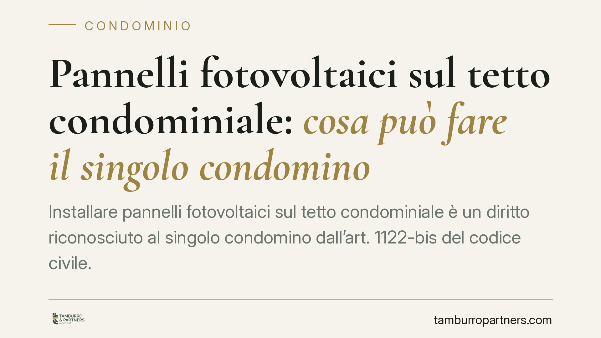

Pannelli fotovoltaici sul tetto condominiale: cosa può fare il singolo condomino
Installare pannelli fotovoltaici sul tetto condominiale è un diritto riconosciuto al singolo condomino dall'art. 1122-bis del codice civile. Ma quel diritto non è illimitato: incontra i vincoli del pari uso e del decoro architettonico, e non consente di occupare da soli l'intera copertura. Ecco come si muove chi vuole procedere e quando serve una delibera assembleare.

Il fatto e perché conta
La transizione energetica ha reso frequente una domanda pratica: il singolo condomino può montare pannelli fotovoltaici sul tetto comune per il proprio impianto? La risposta è affermativa, ma con condizioni precise. Confondere il diritto individuale con la libertà di occupare l'intera copertura è l'errore che genera il maggior numero di contenziosi condominiali su questa materia.
Inquadramento normativo
Il riferimento centrale è l'art. 1122-bis del codice civile, introdotto dalla riforma del condominio (L. 220/2012). La norma riconosce a ciascun condomino il diritto di installare impianti per la produzione di energia da fonti rinnovabili destinati al servizio di singole unità immobiliari, anche su parti comuni come il tetto o il lastrico solare.
Si tratta di un diritto individuale: l'installazione non è subordinata a una preventiva autorizzazione dell'assemblea. Il condomino ha però due obblighi. Deve darne comunicazione all'amministratore, indicando contenuto e modalità dell'intervento. L'assemblea, a sua volta, può prescrivere modalità esecutive e cautele a tutela della stabilità, della sicurezza e del decoro architettonico dell'edificio, e può subordinare l'esecuzione alla prestazione di idonea garanzia per i danni.
L'esercizio di questo diritto resta comunque governato dall'art. 1102 c.c., che disciplina l'uso della cosa comune. Due sono i limiti invalicabili: non alterare la destinazione del bene comune e non impedire agli altri condomini di farne pari uso. In concreto, il primo che installa non acquisisce alcun titolo esclusivo sull'intera copertura: deve lasciare spazio disponibile agli altri comproprietari che intendano fare altrettanto.
Quando l'intervento richiede di modificare le parti comuni o di ripartire tra i condomini gli spazi disponibili sul tetto, entra in gioco l'art. 1136, comma 5, c.c., che per le innovazioni richiede un quorum qualificato: il voto favorevole della maggioranza degli intervenuti che rappresenti almeno i due terzi del valore dell'edificio (pari a circa 667 millesimi). È bene tenere i due piani distinti: l'installazione in sé non dipende da una delibera; la delibera serve solo quando occorre ripartire lo spazio comune o autorizzare modifiche strutturali della copertura.
Implicazioni pratiche
Per chi vuole installare, il messaggio è netto: si può procedere senza chiedere il "permesso" all'assemblea, ma non si può ignorare l'amministratore né occupare da soli tutta la superficie utile. Un dimensionamento dell'impianto che saturi il tetto espone al rischio di ordine di rimozione promosso dagli altri condomini.
Per il condominio, il tema è la gestione ordinata degli spazi. Dove più unità vogliano dotarsi di fotovoltaico, è opportuno che l'assemblea definisca a monte un criterio di ripartizione della copertura, per evitare che il fattore tempo ("chi prima arriva") diventi fonte di conflitto.
Resta poi centrale il decoro architettonico: un impianto visibile e invasivo su un edificio di pregio, o soggetto a vincolo, può richiedere accorgimenti di posa e, in certi casi, incontrare limiti ulteriori derivanti dalle norme urbanistiche e paesaggistiche.
Cosa fare in concreto
- Comunica all'amministratore il progetto prima di iniziare i lavori, allegando la relazione tecnica su collocazione, ingombro e modalità di posa.
- Dimensiona l'impianto in modo da non saturare la copertura: lascia spazio proporzionale agli altri condomini che potrebbero volere lo stesso.
- Verifica il decoro e i vincoli: valuta l'impatto estetico e accerta l'esistenza di vincoli paesaggistici, storici o urbanistici prima di depositare i titoli edilizi.
- Chiedi la delibera con quorum ex art. 1136, comma 5, c.c. solo quando l'intervento comporta modifica delle parti comuni o ripartizione degli spazi.
- Conserva la documentazione: comunicazione all'amministratore, progetto, eventuali verbali assembleari e autorizzazioni. In caso di contestazione, la tracciabilità è la prima difesa.
È opportuno affrontare la questione a monte, definendo con l'amministratore modalità e limiti dell'intervento: prevenire il conflitto costa meno che gestirlo in giudizio.
Contributo informativo a cura di Tamburro & Partners - Avv. Giuseppe Tamburro. Non costituisce parere legale.
Ogni condominio ha una storia a sé.
Se gestisci un'amministrazione e vuoi un confronto su una specifica questione condominiale, scrivi allo studio. Ti rispondiamo entro un giorno lavorativo.